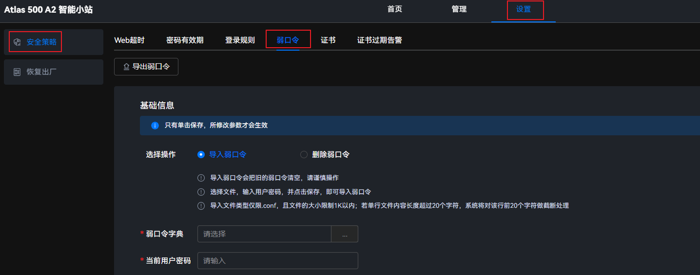
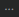
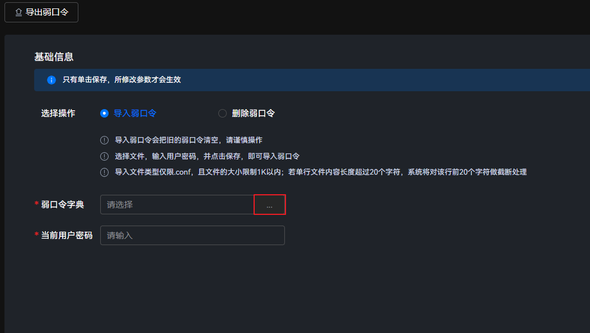
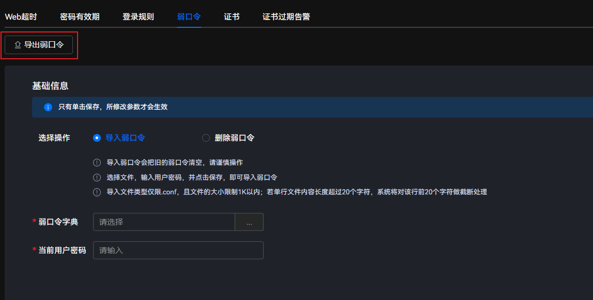
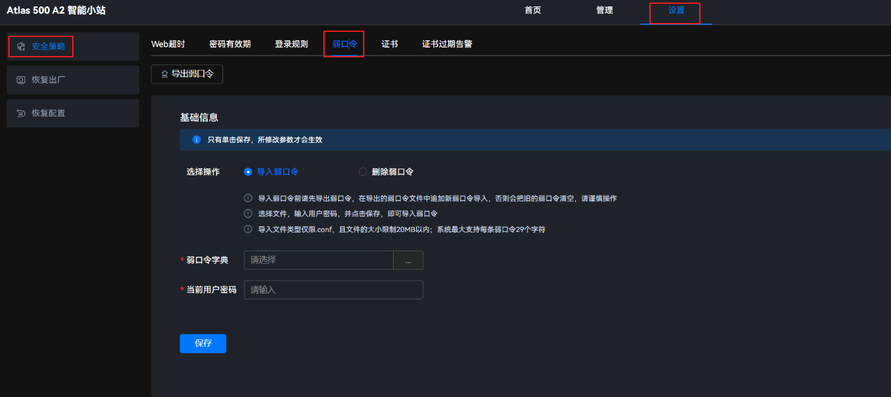

导入弱口令
- 在主菜单中选择。图1 弱口令
 - 单击“导入弱口令”。
- 导入弱口令会把旧的弱口令清空，请谨慎操作。
- 选择文件，输入用户密码，并点击保存，即可导入弱口令。
- 导入文件类型仅限.conf，且文件的大小限制1K以内；若单行文件内容长度超过20个字符，系统将对该行前20个字符做截断处理。
- 单击“弱口令字典”后的，并选择要上传的文件。
- 上传文件。图2 导入弱口令

- 每次只允许导入一个配置文件。
- 导入文件后会覆盖系统当前的弱口令字典。
- 在“当前用户密码”文本框中输入系统当前的用户密码。
- 单击“保存”。
界面上方弹出“弱口令导入成功”提示框，表示导入弱口令字典成功。
导出弱口令
- 在主菜单中选择。图3 弱口令
- 单击“导出”，将当前系统的弱口令字典保存至本地。图4 导出弱口令

删除弱口令
- 在主菜单中选择。图5 弱口令
 - 单击“删除弱口令”。
- 删除的口令无法找回，请谨慎操作。
- 输入用户密码，并点击保存，即可删除系统现有的弱口令。
图6 删除弱口令
- 在“当前用户密码”文本框中输入系统当前的用户密码。
- 单击“保存”。
界面上方弹出“弱口令删除成功”提示框，表示删除弱口令字典成功。